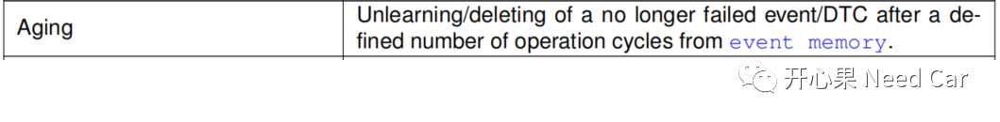
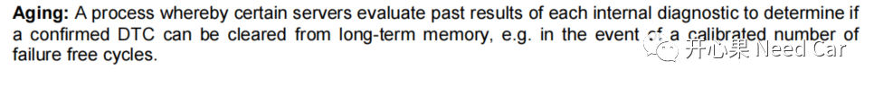
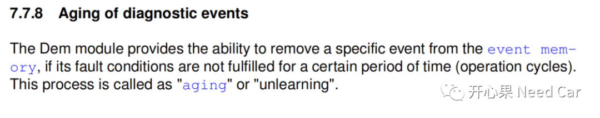
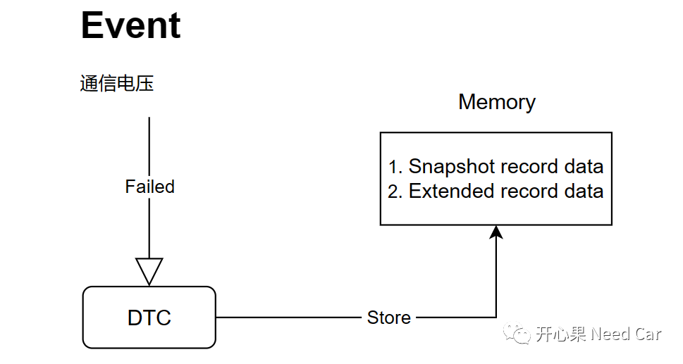
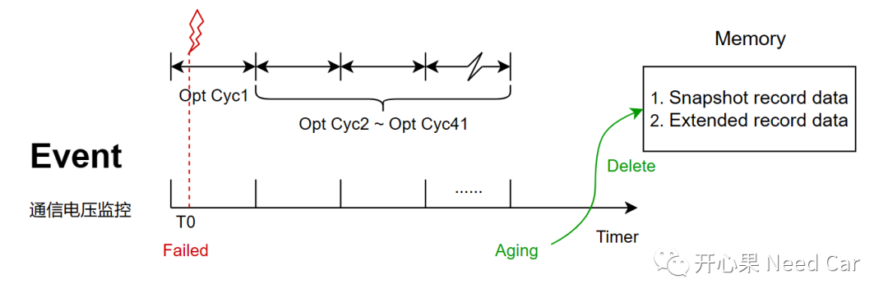
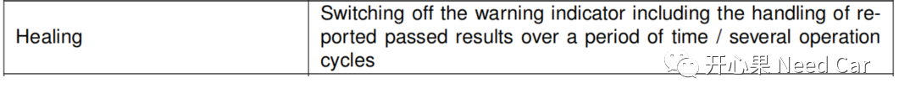
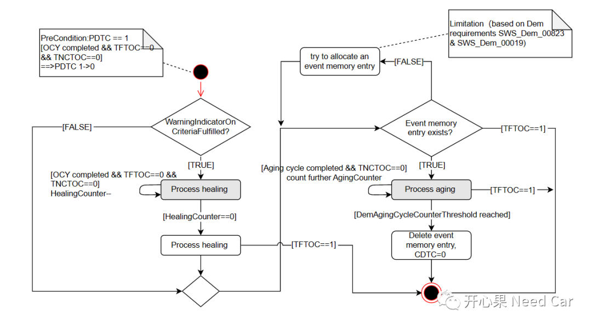

开心果 Need Car · 2023-04-17T09:59:00+08:00 · 微信原文
做诊断开发的小伙伴或许比较熟悉Aging（老化）和Healing（愈合）这两个概念。对于刚接触诊断不久的小伙伴，有时会混淆这两个概念，本文，讨论一下这两个概念。
Aging（老化）
先看一下Autosar规范中对于Aging的解释，如下所示：


相比如上的两个解释，如下的解释可能更好理解：

举例：诊断设计中，会监控通信电压，如果通信电压＜6V或者＞18V，且状态维持2s，则认为通信电压异常，需要将此Event状态上报给DEM模块，DEM模块将与通信电压监控事件关联的DTC信息存储到内存中，这里的信息包括DTC快照数据和DTC拓展数据，示意如下：

事件故障以后，信息被存储到内存中。是不是要一直存储呢？答：当然不是。任何事情，不应太绝对化的处理，需要留有容错处理机制。如果上述故障只是某个极端工况发生的事件，可以给一个恢复机制，也就是Aging。如何Aging呢？

2、Healing（愈合）
先看一下Autosar规范中对于Healing的解释，如下所示：


往期精彩回顾
Autosar网络管理：为什么需要2帧网络管理报文唤醒网络？
Bootloader开发：为什么需要SBL（Secondary Bootloader）?
Autosar EcuM：APP由RUN到POST_RUN浅析